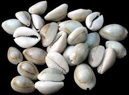

1. Early Counting Devices
In ancienttimes, the early man was a hunter and a flesh eater. He never had anything to count, but as time passed man started to think of cultivation of crops and rearing of farm animals.
Then, arose the need for him to count. Because of this, the early man began using the following devices to count numbers.
- Fingers
- Stones
- Sticks
- Cowries
Fingers
The ancient people made use of fingers to count.
Fingers can only be used to count digits from 1 to 10. And as time passed, the fingers and toes were used to count numbers more than 10
Stones
As a result of the stress of using fngers to count numbers of animals larger than 20.
The early man learnt how to use stones and pebbles for counting and also to count his wealth
Sticks
Man later used sticks to count and perform addition and subtraction.
This technique also requires physical effort and a lot of stress in terms of performing larger calculation.
Cowries
Cowries were also used to count and perform simple arithmetic in ancient time.
This technique also took too much energy, especially when large numbers were involved.

Quiz: Early Counting Devices
Question 1
All of the following are ancient counting devices except ________